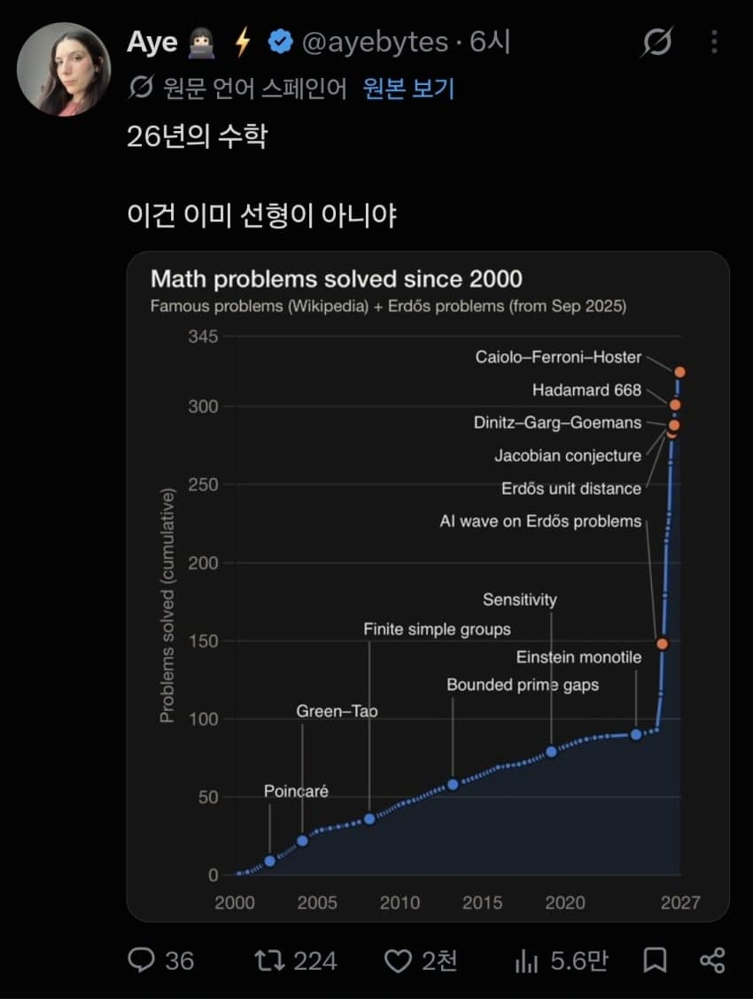

2026년 이후로 풀린 난제 갯수가 급상승함

2026년 이후로 풀린 난제 갯수가 급상승함
Ai 입장에선 난제도 아닐수 있지
인간이 못 푸니까 난제였던건데 ㅋㅋ
걍 쎈수학인줄 아는거같은디
이제 ai한테 난제 발견하라고 해야할듯
Ai한테 너무 많은 지식을 알려주고잇는듯
인간이 너무 작았던거
리만함수 풀린거 보니까 새로운 지식이 아니라, 엄청나게 많은 변수를 무제한 노가다로 풀어야 해서 인간이 손 못댄 것들을 AI가 단순무식하게 풀어버린 면이 있더라 ㅋㅋㅋ 새로운지식이라기 보다 노가다의 장인이 나타난거
손가락 10개인 인간이 12나 13쯤 되는 답을 내려면 그냥 손가락으로 세어보겠지 그걸 위한 정리나 증명을 만드는 대신
AI는 이제 손가락 22만개쯤인 인간이 나온거같음 ㅋㅋ 걔한텐 복잡한 정리보다 걍 해보는게 빠를듯
손가락 무제한 탈부착 커스텀 가능 ㅋㅋ
설포카 말고, 어중간한 상위 5% 부터 100%까지의 대학 수학과는 이제 뭐해먹고 사나?
다단계 학위사기
설카포 수학과도 이제 먹고 못살아...
팩트는 원래도 수학만 해서는 못 먹고 살았단거임 ㅋㅋ
이제 AI가 난제대신 난자를 만들어요오오오옷~♡

난제냥이들 검증해야는거아니냐
검증됨?
2026은 특이점의 해
수학과 이미 치킨집 하고 있지않나....
수학적으로는 특이점에 도달한건가?
그래서 왕고추 훈남 휴머노이드는 언제나오는데
특이점이 왔?
노벨 딸깍상 수상
이제 어느 학문분야든 인간이 ai를 뛰어넘는 경우는 점점 더 없어질듯. 이제 연구자들은 기본적으로 원하는 답변을 효율적으로 이끌어낼수있는 프로프트 엔지니어링에 본인의 전공분야 못지않게 더 많은 시간을 투자해야할것
이러다가 기술특이점 오는거지뭐
나는 빨리가속해서 영생을 살면서 가상현실에서 게임하면서 살고싶다
18년도에 26년에 ai 특이점 온다그랬는데 지금인가.. 그때 엔비디아 사라그랬는데 ㅜ
언제 화성 테라포밍하냐 한 2년뒤에 할라나
AI의 최대 장점은 컴퓨팅 자원이 허락하는대로
병렬 사고가 가능해서 불가능하던 시뮬레이션을
인간이 처리하면 불가능할 수치를 뚝딱해냄
어떻게 보면 존나 크고 빠른 계산기 같음
맞지
그런데 추리 판단까지 하는게 무서운것.
알아서 해 -> 뭔가 한다는거임 ㄹㅇ..
원래 같으면 플래닝이랑 핸들링 직접 해야되는데
아이디어만 넣으면 자연어로 상호작용하면
A가 없어서 B가 못하던 사람한테는 기회고
어느 분야나 컴퓨터 작업이 껴잇으면 실행력을
그냥 개 좆되게 만들어줘버리니까
코드 = 더이상 전문가 영역이 아니게 됨
난 취미로 코딩20년정도했는데 오푸스만지면서 코딩자체를 안본지오래됨 굳이 내가 확인까지할필요성까지도 못느끼는중
5.5오푸스 정도 오니까 다 그러는듯…
어차피 사용할 스택이나 취약점은 사전에
핸들링하게 지침 주면 사람보다 잘하다보니
이제 ai가 난제 만들고 지가 풀고 하는건가